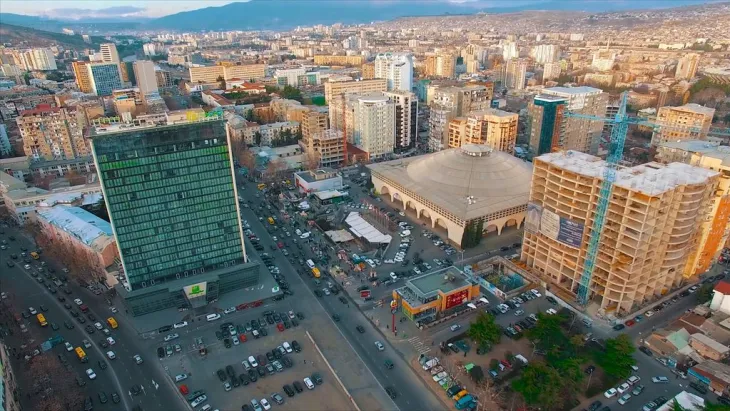
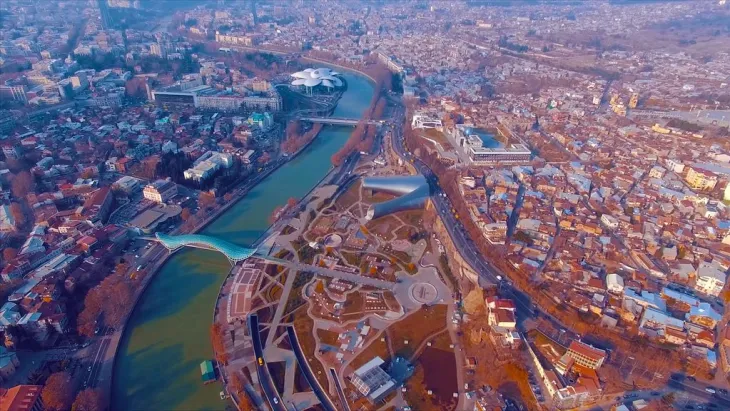

Місто Тбілісі (Грузія)
Тбілісі (груз. თბილისი, — «тепле джерело»)— столиця Грузії, розташована в східній частині країни на берегах Кури (Мткварі). Це стародавнє місто, засноване в 5 столітті, в якому зараз проживають понад 1 млн чоловік. Тбілісі — одне з найчарівніших міст Кавказу, де серед вузьких атмосферних вуличок, затишних старих двориків і кривих будинків приховані дивовижні пам’ятки та унікальні скарби. Попри те, що за свою полуторатисячелітню історію Місто було зруйноване і перебудоване кілька десятків разів, старе місто зберегло середньовічний шарм і значною мірою свій оригінальний стан.
Географія та погода
Тбілісі розташований в центрі Східної Грузії в улоговині, обмеженою відрогами Триалетского хребта, Сагурамского хребта та Іорского нагір’я. Клімат — помірно-континентальний з відносно жарким літом і прохолодною зимою. Завдяки близькості до теплих морів (Чорне і Каспійське) і великого Кавказького хребта, який блокує вторгнення повітряних мас, Клімат Тбілісі тепліший, ніж в містах на тих же широтах. Середньорічна температура становить 12,7 градуса. Найхолодніший місяць січень з температурою близько 00C. Середня температура літа понад 20 градусів.
Найкращий час відвідування
Найкращий час для відвідування Тбілісі період з травня по жовтень. У липні й серпні може бути досить жарко. Щоб насолодитися містом без туристів краще приїхати взимку або на початку весни.
Практична інформація
- Населення – 1.1 млн осіб.
- Площа – 720 квадратних кілометрів
- Мова — грузинська.
- Валюта — грузинський ларі.
- Час – UTC + 4.
- Віза не потрібна на термін перебування до 360 днів.
Історія та цікаві факти
За легендою Тбілісі був заснований в 5 столітті нашої ери давньогрузинським царем Вахтангом Горгасалі. Вже в 6 столітті місто стало столицею держави. Цікаво, що поселення на місці сучасного Тбілісі було відзначено на римських картах. В історичному центрі були виявлені терми, що датуються 1 століттям нашої ери, а також залишки стародавніх поселень 3-4 століття до нашої ери. Назва Тбілісі (раніше Тифліс) перекладається як “теплий”, через безліч термальних джерел.
Грузинська легенда оповідає про те, що раніше територія Тбілісі була покрита лісами, в яких полював правитель давньогрузинськї держави Вахтанг I Горгасал. Він підстрелив птицю, яка впала в гаряче джерело і зварилася. За іншою версією це був олень, який прибіг до джерела і зцілився. ЦАР порахував це “добрим” знаком і заклав тут місто.
У 6 столітті столиця грузинського царства була перенесена з Мцхети в Тбілісі. У 626 році місто після багатомісячної облоги було захоплене хазарами. У 653 році Грузія була підпорядкована арабами, хоча Тбілісі зберіг деяку незалежність майже на сторіччя. В 736 року місто було захоплене арабськими військами. Араби правили Грузією до 11 століття. У 1122 році воно стало столицею об’єднаної та незалежної Грузії.
Розквіт грузинського царства тривав до 13 століття. У 1226 році Тбілісі був розорений військами Джалал-Ад-Діна, в 1238 році захоплений монголами, які правили Грузією до 1327 року. У 1366 році до міста дійшла велика чума. З 14 по 17 століття місто пережило кілька розорень і руйнувань:
- У 1386 році Тбілісі було захоплене ордами Тимура.
- В 1444 році місто зруйнували війська держави Кара-Коюнлу.
- У 1536 році було захоплене іранською армією.
В 1490 році (після розпаду Грузинської держави) Тбілісі стало столицею Картлійського царства. У 1578 році місто зайняли турки. У 1783 році Грузія приймає протекторат Російської імперії. Тбілісі залишається головним містом країни. У 1918 році було оголошено про незалежність Грузії. Незалежне грузинська держава проіснувала недовго і вже в 30-х роках 20 століття країна стала частиною Радянського Союзу. Грузія стала незалежною в 1991 році після розпаду СРСР.
Кухня
Грузинська кухня — смачна, дешева та універсальна. У Тбілісі можна поїсти ситно і недорого. Традиційні грузинські страви: пурі (хліб), хачапурі (коржик з сиром), чвиштари (випічка з кукурудзи), джонджолі (мариновані квіти якоїсь рослини), бадриджані (баклажанові рулетики), пхалі, хінкалі, долма, мцваді (шашлик), лобіо, чашушулі (тушкована телятина), чакапулі (м’ясо зі спеціями), чурчхела, чирі (в’ялена хурма). Приймання їжі супроводжується чачею, келихом грузинського вина і склянкою мінеральної води.
Як правильно обрати ліжко
При виборі ліжка в інтернет магазині Вам в першу чергу потрібно вибрати матеріал. Найбільшою популярністю користуються дерев'яні ліжка, виготовлені з вільхи, ясена чи дуба. Такі моделі чудово прикрасять Вашу спальню у квартирі чи приватному будинку. Для орендованих квартир, під здачу, більше підійде ліжко з металу, так як воно просто «не вбивається», а також має дуже демократичну ціну
Для Вашої зручності ліжко може комплектуватись висувними ящиками або підйомним механізмом. Ящики можуть бути з одного боку ліжка або з двох. Також є моделі, з висувними ящиками спереду. Ліжка з підйомним механізмом, це відмінне рішення, для невеликих кімнат, вони дозволяють заощадити простір і мають велику нішу для зберігання постільної білизни. Всі дерев'яні ліжка комплектуються буковими ламелями. Спальне місце з ламельною основою може витримувати навантаження до 150 кг на одне спальне місце. Відстань між ламелями, у своїй має бути 2,5-3 див.
Оформлення вітальні. Які м'які меблі краще вибрати?
Вітальня – це основна кімната у кожному будинку. Саме вона служить для прийому гостей, проведення часу всією сім'єю та просто для відпочинку у приємній теплій атмосфері. Оформляючи свій будинок та вітальню зокрема, всі намагаються зробити її максимально зручною, комфортною та красивою. Основним та центральним елементом оформлення вітальні, як і будь-якої іншої кімнати, є м'які меблі.
Будь-які меблі для вітальні повинні бути не тільки стильними і красивими, але і функціональними. На таких меблів має бути зручно та приємно відпочивати та приймати гостей. Однак сьогодні існує величезна різноманітність найрізноманітніших м'яких меблів для вітальні, яка підходить для кімнат різних розмірів і форм. На чому варто зупинити свій вибір? Як краще оформити свою вітальню, щоб вам було комфортно, а гості хотіли приходити до вас знову та знову?
На сайті інтернет магазину Кровато представлено велику різноманітність м'яких меблів для вітальні, серед яких кожензможе вибрати для себе найбільш вдалий варіант. У нас ви знайдете
- Прямі дивани. Такі дивани вважаються класикою. Вони підходять для віталень будь-яких форм та розмірів. Прямий диван виглядає стильно та лаконічно, на ньому зручно відпочивати, приймати гостей або навіть спати. Прямі дивани можуть стояти біля стіни, так і в центрі кімнати. Багато моделей прямих диванів легко розкладаються, перетворюючись на повноцінне спальне місце. Також більшість диванів мають великі та місткі ніші, які є додатковим місцем для зберігання;
- Кутові дивани Кутові дивани вважаються найзручнішими та комфортнішими. Вони ідеально підійдуть для приємного проведення часу в колі сім'ї або друзів. Кутові дивани в основному використовуються для оформлення великих віталень, так як вони займають багато місця, і для кімнат з невеликою площею просто не підійдуть
- Тахти. Тахта - це одна з варіацій дивана, але стильніша і мінімалістична. Виглядають тахти дуже незвично і можуть підійти для будь-якого інтер'єру. Також тахти більше ніж звичайні дивани підходять для сну, оскільки в їх основі не пружинні блоки, а дерев'яні ламелі або ортопедичні матраци
- Крісла. Крісло – це особливий предмет інтер'єру. Сучасні дизайнери не часто використовують його, вважаючи застарілим, проте саме крісла створюють особливий затишок та комфорт у будь-якій кімнаті. Сьогодні існує величезна різноманітність класичних та сучасних моделей крісел, що дозволяє кожному відшукати ідеальне крісло для свого будинку;
- Прямі дивани. Такі дивани вважаються класикою. Вони підходять для віталень будь-яких форм та розмірів. Прямий диван виглядає стильно та лаконічно, на ньому зручно відпочивати, приймати гостей або навіть спати. Прямі дивани можуть стояти біля стіни, так і в центрі кімнати. Багато моделей прямих диванів легко розкладаються, перетворюючись на повноцінне спальне місце. Також більшість диванів мають великі та місткі ніші, які є додатковим місцем для зберігання;
Підбір м'яких меблів для вітальні – це заняття непросте. Однак при виборі та покупці меблів для своєї вітальні пам'ятайте, що якісні м'які меблі повинні бути не тільки красивими, але й зручними для вас і всіх мешканців вашого будинку.